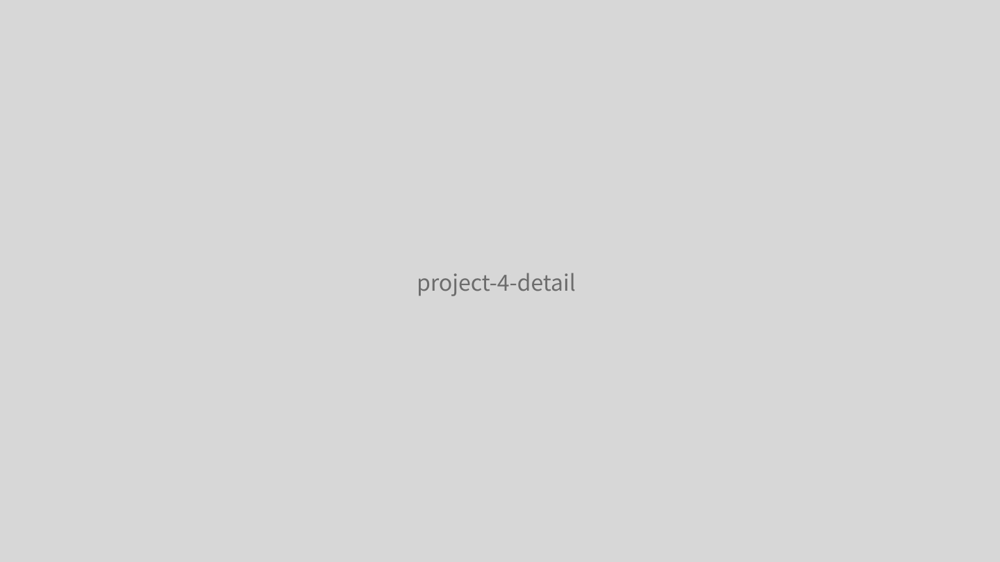

重新設計平台的刊登收費流程，優化付費體驗，提升使用者的付費轉換率與滿意度。
原有的刊登收費流程複雜且不直覺，使用者經常在付費環節流失。團隊決定重新設計整個收費體驗，以提升轉換率並降低客服負擔。
主導收費流程的 UX 改版設計，從資料分析、使用者訪談到方案設計與 A/B 測試，全程參與並推動設計決策。

將原本五步驟的收費流程精簡為三步驟，重新設計方案比較頁面，以視覺化的方式呈現不同方案的差異，降低使用者的決策成本。
改版上線後付費轉換率提升 35%，相關客服工單減少 50%。新的收費頁面也成為後續其他產品線的設計參考。